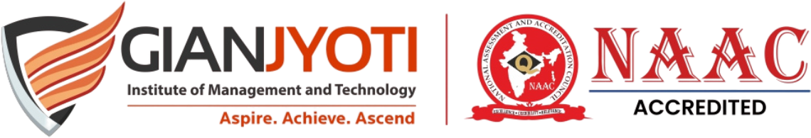

AI Awareness & Generative AI Assessment for Students
This assessment is designed for Session 3 of the GJIMT AI Monthly Sessions: NotebookLM.
The assessment checks practical understanding of Google NotebookLM, adding sources, asking questions grounded in sources, citations, Audio Overviews, study tools and responsible verification of AI-generated information.

Certificate available for scores 50%+.
Keep practising prompts, exploring responsible AI use and applying AI to study, communication and productivity.
The certificate PDF cannot be downloaded or shared until feedback submission succeeds. A score of 50% or above is also required.
Your feedback will help us improve future faculty-led learning sessions at GJIMT. Please rate the session honestly.
Copy the feedback summary and share it with the AI Monthly Sessions coordination team.